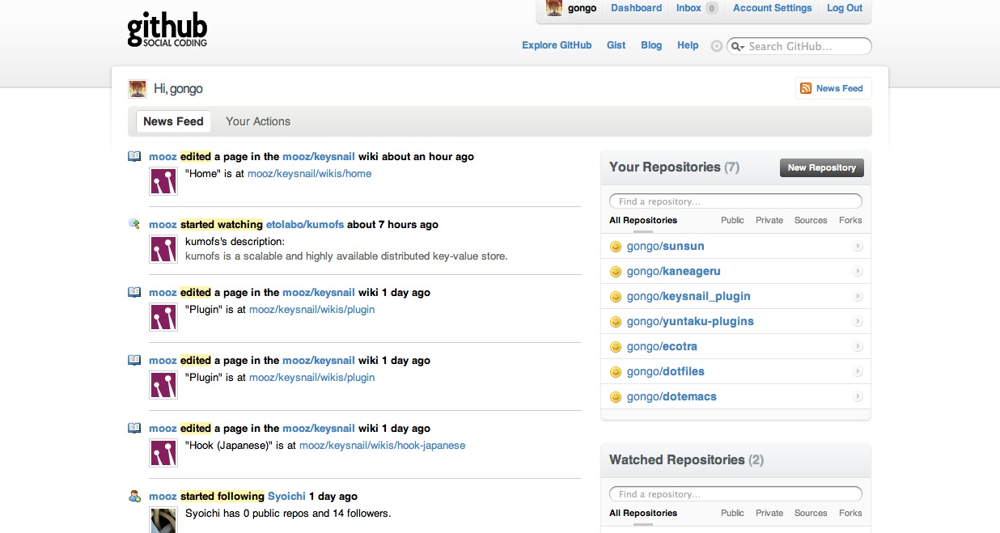

GitHub
Table of Contents
1 GitHub とは
Online project hosting using Git. Includes source-code browser, in-line editing, wikis, and ticketing. Free for public open-source code.
(via GitHub http://github.com)
1.1 ホスティング(サーバ)って？
サーバの利用者自身でサーバの運営・管理をしなくてもいいように、 有料または無料でサーバ機のHDDの記憶スペースや 情報処理機能などを利用させるサービス
(via ホスティングサーバ - Wikipedia)
1.2 リポジトリホスティングサービス一覧
| name | SCM (Source Code Management) |
|---|---|
| GitHub | Git |
| SourceForge | Subversion, Git, Mercurial, Bazaar, CVS |
| Google Code | Subversion, Mercurial |
| RubyForge | Subversion, Git, CVS |
1.3 トップページ

- フォローしている人の動向
- 自身が登録しているリポジトリ
1.4 基本的な使い方
1.4.1 ユーザ側として
- ソースコードをダウンロード
検索して git clone 。これだけ！github にあるソフトウェア author / name description URL rails/rails Ruby on Rails http://github.com/rails/rails/ rspec cucumber Tomohiro/citrus-plugins Citrus (IRC Bot) Plugin http://github.com/Tomohiro/citrus-plugins
1.4.2 開発者側として
- リポジトリを作ってみよう
- README
http://github.com/guides/readme-formatting
1.4.3 他の人のプロジェクトに介入しよう
- fork
- pull request
Guides: Pull Requests
2 Gist
2.1 Gist ってなんぞや
2.1.2 Gist でも fork できる
- gongo http://gist.github.com/280029
- Tomohiro http://gist.github.com/280025
2.2 gisty
command line client for gist
| command | description |
|---|---|
| gisty list | show local list. |
| gisty post file1 file2 … | post new gist. |
| gisty privatepost file1 file2 … | post new private gist. |
| gisty sync | sync remote gist. (clone all remote gist) |
| gisty syncdelete | sync remote gist. delete local gist if remote gist was deleted. |
| gisty pullall | pull all gist. |
| gisty about | show about gisty |
| gisty help | show help |
Date: 2010-01-21 10:46:04 JST
HTML generated by org-mode 6.34c in emacs 23